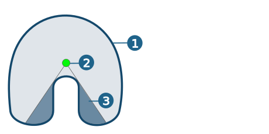
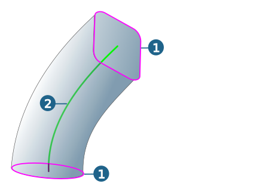
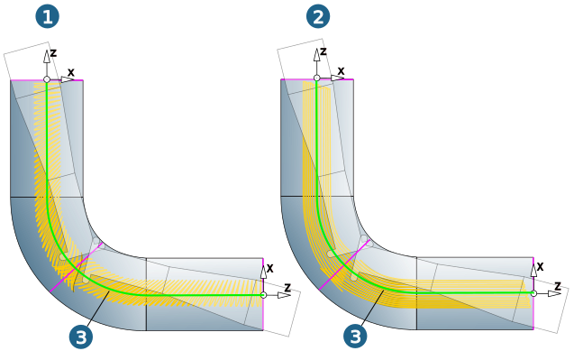
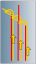
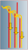
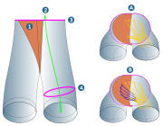
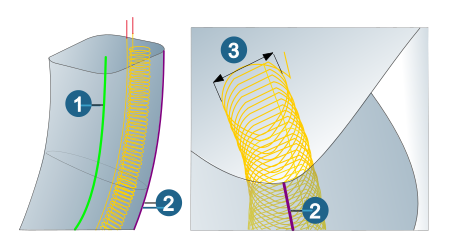

Strategy
Central curve
Central curve: The central curve describes the default machining behavior with regards to
-
the orientation of the planes at the beginning and end of machining – perpendicular to the central curve,
-
the position of the planes at the beginning and end of machining – upper/lower end point of the central curve,
-
the (optional) tilt curve for orientation of the tool.
The central curve does not have to be positioned exactly in the center of the tube’s cross-section, nor does it need to precisely mirror its curvature profile. However, it must
-
be aligned from outside in (facing the depth infeed),
-
be positioned within the path(s) of the tool center,
-
not create any shaded areas – if possible.
(1) Tube wall, (2) Central curve, (3) Shaded area
|  |
Start point / End point: Manually selecting a start and/or end point overwrites the machining start and/or end positions automatically calculated by the central curve or profile curves.
Reverse: Reverse machining direction.
Start plane / End plane
Start profile / End profile (1): Deviating from the defaults from the central curve (2), these profiles define
-
the alignment of the start or end plane,
-
the position of the start or end plane if no start or end point is defined for the respective side.
Note
A profile does not have to be closed. So no complete cut through a channel is required. It can also be a single arc or two consecutive lines.
|  |
Tube Roughing
The following functions are only available in the Tube Roughing cycle.
Lateral infeed strategy
There are two directions available for the lateral infeed inside each level.
Toward central curve: (A) The tool moves in a spiral along the surfaces of the tube to the next plane and then removes the material in the direction of the central curve.
Away from central curve: (B) The tool moves along the central curve to the next plane and then removes the material from the central curve in the direction of the surfaces of the tube.
Warning
If the Away from central curve strategy is applied, it must be ensured that the tool can enter along the central curve, e.g. by means of drilling.
Tube Finishing
The following functions are only available in the Tube Finishing cycle.
Strategy
Note
The Spiral and Parallel machining strategies are only available in the Tube Finishing and Tube Rest Machining cycles.
Spiral: (1) Machining takes place in spiral movements around the central curve (3).
Parallel: (2) Machining takes place parallel to the central curve (3).
|
Example |
5X Tube Finishing, Woodruff cutter, Strategy (1) Spiral, (2) Parallel. |
|  |
Note
For machining with the Parallel strategy, the following options are supported in the Tube Finishing cycle:
|

|
Oneway Outside-in: (1) Generates toolpath pairs and always starts with a movement from the outside to the inside along the channel surfaces and moves the tool with a user-defined additional side distance to the channel surfaces (see → ) from the inside to the outside. TipUseful for the same cutting direction along the channel surfaces, whereby the tool can be pulled from the inside to the outside at a higher feed rate. |
|

|
Oneway Inside-out: (2) Generates toolpath pairs and always starts with the path from the outside to the inside with an additional side distance to the channel surfaces (see → ), followed by the path from the inside to the outside along the channel surface. The path from the outside to the inside can be performed with a separate feedrate (see → )
TipUseful for the same cutting direction along the channel as a combination of semi-finishing and finishing – especially for thin tools. |
 |
Zigzag: (3) The toolpath starts with a path from the outside to the inside with an additional side distance to the channel (see → ) and then continues with a zigzag movement on the component. The first path from the outside to the inside can be performed with a separate feedrate.
TipUseful if the cutting direction is not important. |
Virtual surfaces
Tip
Use virtual surfaces to guide the tool, trim the toolpath or machine with a separate feedrate. Virtual surfaces are not checked against shank collisions.
Select Surfaces to be used as virtual surfaces.
Channels (1) can end in a plane cut (A). To close side openings, Additional surfaces (2) or Virtual surfaces (3) can be used to guide the tool in a closed cross-section. Compared to using additional surfaces (B), virtual surfaces (C) have no negative impact on the depth that can be achieved, as they are not checked for collision against the shank or holder of the tool.
 |
When using Virtual surfaces, compared to Additional surfaces, parallel toolpaths can also be
-
trimmed (A) or
-
performed with a higher feedrate (B).
Note
To trim the paths or output a higher feedrate, the distance between the virtual surfaces and the model ( → ) should be greater than the maximum material removal, that is, at least the allowance of the pre-machining.
(1) Virtual surfaces, (2) Central curve, (3) Start plane, (4) End plane.
|  |
Include bottom
Optimized machining of channels that are closed at the bottom (for example, recesses with an undercut and inclined/curved bottom). If the Include bottom function is enabled, precise subsequent equidistant bottom machining is generated below the end plane.
If the Include bottom function is enabled, the → function is automatically disabled (= grayed out) so that no input is possible. The following message is also displayed: “Smooth overlap: below end plane” is not available when the bottom region is included.
Synchronize toolpaths
Synchronization curves
When finishing with a parallel machining strategy, synchronisation curves may be used optionally to influence the path profiles. The first synchronisation curve determines the course of the first path. All further synchronisation curves divide the cross-section into interpolation areas for path calculation and define the path profile required here.
Note
Synchronisation profiles may go beyond the machining area. They have to be positioned - from the central curve's POV - behind the path to be calculated.
Equal: Between two synchronisation curves, all plane cuts are divided into the same number of segments. The end points of the part segments are linked across all sections to form parallel paths.
Distance: The synchronisation of the points in the individual plane cuts, which are linked to form a parallel path, takes place at the shortest distance between the cuts.
Tube Rest Machining
The following functions are only available in the Tube Rest Machining cycle.
Reference curve
The reference curve defines the center of the rest material area that is to be subsequently machined with a smaller tool. (1) Central curve.
Side width: The side width (3) is limited by specifying a value symmetrical to this reference curve.
|  |